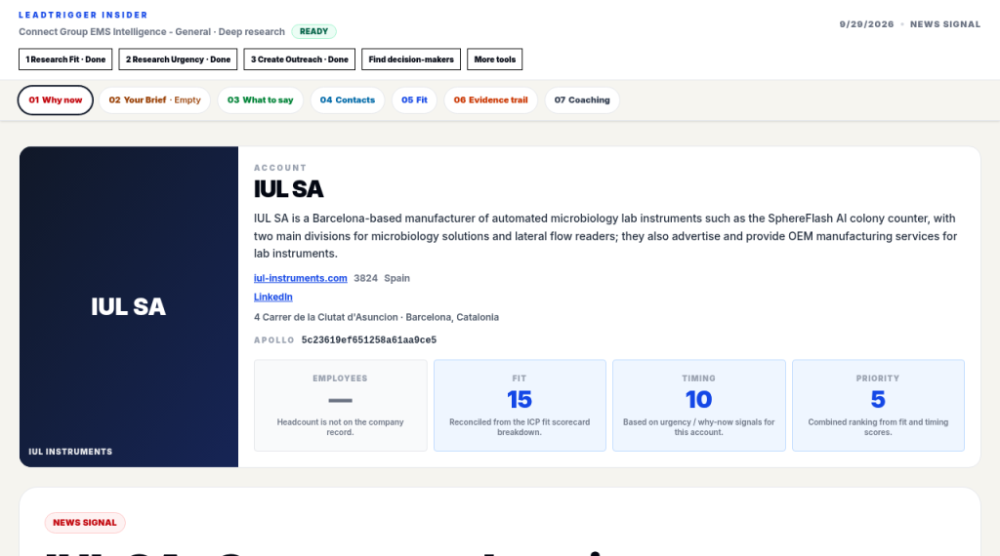

De verkoper, van home naar share-artikel.
Leadtrigger is de tool rond één venture. De verkoper heeft vijf ingangen. Home toont het aanbod: offering, ICP, status en sectoren. Share lists, Browse companies, News en Prepare one zijn de andere vier. Browse companies opent op Ready. De verkoper klikt Search. Page is Open of Not ready. Open gaat naar één share-artikel.
Het telt omdat hij niet leeg begint. Het artikel heeft plekken voor Why now, Your Brief, What to say, contacten, fit, het bewijs en coaching. Die plekken kunnen leeg zijn. De chip zegt hoe ver het artikel is: Ready, Fit done, Urgency done, Outreach done of Needs research. Niet dat de tekst al gevuld is.
Wat er in de demo gebeurt: Home, zoeken, Open, artikel en chip. Share lists, News en Prepare one horen bij de verkoper, maar zijn geen extra stappen in deze doorloop.
Achter het verkopersmenu zit de rest. Dat is admin, en dat lopen we nu niet door: watchlists, inbox, request watchlist, venture scores, match, import, cast, ventures en users.
-
1. Home
Zijbalk: Home, of de venture-naam. Route:
/. Offering, ICP, status, sectoren. Geen bedrijvenlijst. Open Home -
2. Browse companies
Route:
/companies. Opent op Ready. Search. Op de rij: Company, Country, Page, Fit, Urgency, Jev, Sector. Page is Open of Not ready. Open Browse companies -
3. Share-artikel
Open gaat naar
/share/article/{sleutel}. In de kop: Employees, Fit, Timing, Priority. Daaronder de plekken, die leeg kunnen zijn. Open share-artikel
-
4. Chip op het artikel
Geen reviewed-kolom op de lijst. Het dichtstbij is Page: Open of Not ready. De chip is Ready, Fit done, Urgency done, Outreach done of Needs research.